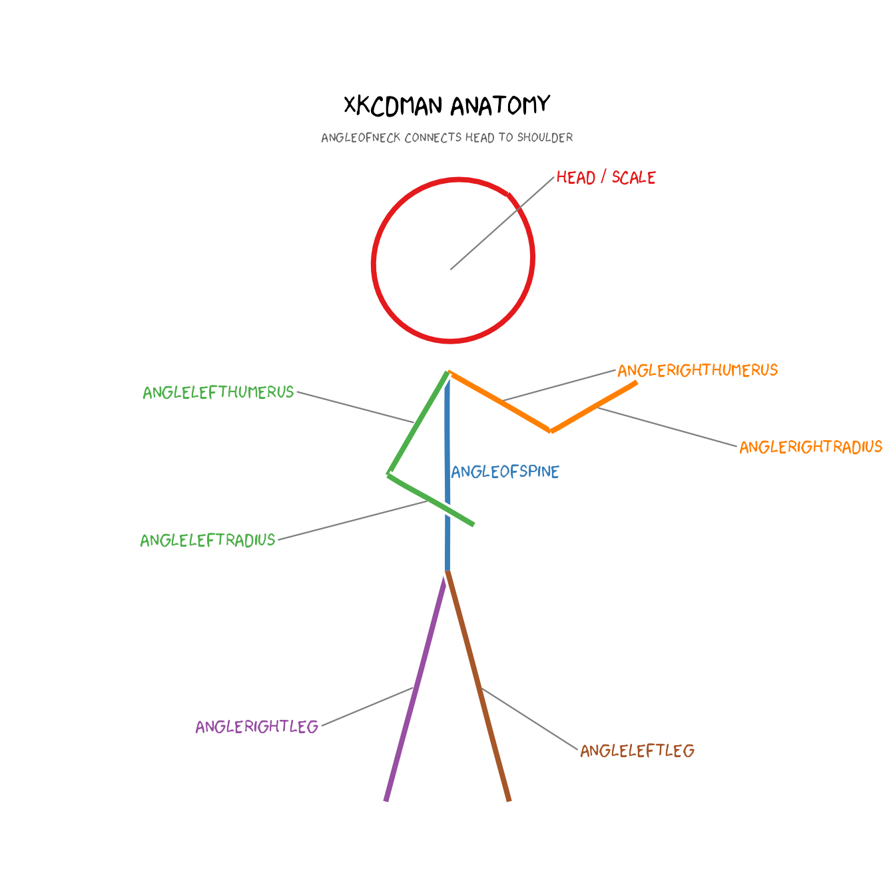
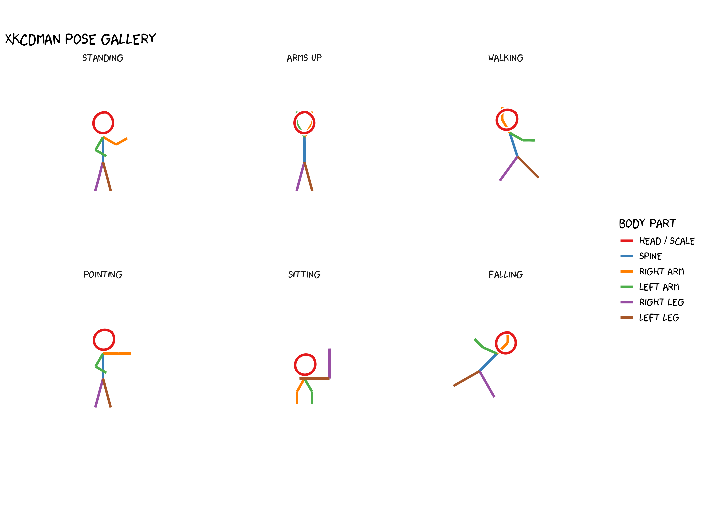
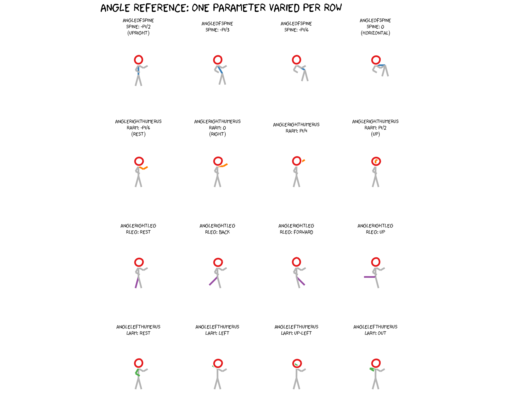

How xkcdman works
The wild anatomy of a stick figure.
xkcdman() draws a stick figure defined entirely by
angles (in radians) for each body segment. The figure
has 8 parts:
| Parameter | Body part |
|---|---|
angleofneck |
neck — connects head to top of spine |
angleofspine |
spine — main torso |
anglerighthumerus |
right upper arm |
anglerightradius |
right forearm |
anglelefthumerus |
left upper arm |
angleleftradius |
left forearm |
anglerightleg |
right leg |
angleleftleg |
left leg |
Two other parameters control size and proportion:
-
scale— diameter of the head (all other segments are proportional to it). Set it to roughly 10–15% ofdiff(yrange). -
ratioxy—diff(xrange) / diff(yrange). Corrects for axis scaling so the figure is not stretched horizontally or vertically.
All angles follow the standard mathematical convention: 0 = right, π/2 = up, π = left, 3π/2 (or −π/2) = down.
Part 1 — Anatomy diagram
Each bone is drawn separately with its own color so you can see exactly what each parameter controls. The helper below draws a single labeled figure with colored segments.
# --- geometry helper: compute bone endpoints from the same formulas as xkcdman
make_figure <- function(x, y, scale, ratioxy,
angleofneck, angleofspine,
anglerighthumerus, anglerightradius,
anglelefthumerus, angleleftradius,
anglerightleg, angleleftleg) {
dh <- scale # head diameter
ls <- dh # spine length
ll <- ls * 1.2 # leg length
lh <- ls * 0.6 # humerus length
lr <- ls * 0.5 # radius length
# key joint positions
shoulder <- c(x, y) +
(dh / 2) * c(cos(angleofneck) * ratioxy, sin(angleofneck))
hip <- shoulder +
ls * c(cos(angleofspine) * ratioxy, sin(angleofspine))
end_rh <- shoulder +
lh * c(cos(anglerighthumerus) * ratioxy, sin(anglerighthumerus))
end_lh <- shoulder +
lh * c(cos(anglelefthumerus) * ratioxy, sin(anglelefthumerus))
seg <- function(from, angle, dist)
data.frame(
x = from[1],
y = from[2],
xend = from[1] + dist * cos(angle) * ratioxy,
yend = from[2] + dist * sin(angle)
)
list(
head = data.frame(x = x, y = y, diameter = dh),
spine = seg(shoulder, angleofspine, ls),
rarm1 = seg(shoulder, anglerighthumerus, lh),
rarm2 = seg(end_rh, anglerightradius, lr),
larm1 = seg(shoulder, anglelefthumerus, lh),
larm2 = seg(end_lh, angleleftradius, lr),
rleg = seg(hip, anglerightleg, ll),
lleg = seg(hip, angleleftleg, ll)
)
}
# Standard upright pose — large figure centred in the plot
xrange <- c(0, 10)
yrange <- c(0, 10)
rxy <- diff(xrange) / diff(yrange)
sc <- 2.5 # bigger figure fills the space
f <- make_figure(
x = 5, y = 7.2, scale = sc, ratioxy = rxy,
angleofneck = -pi / 2,
angleofspine = -pi / 2,
anglerighthumerus = -pi / 6,
anglerightradius = pi / 6,
anglelefthumerus = -pi / 2 - pi / 6,
angleleftradius = -pi / 6,
anglerightleg = 3 * pi / 2 - pi / 12,
angleleftleg = 3 * pi / 2 + pi / 12
)
colours <- c(
head = "#e41a1c",
spine = "#377eb8",
rarm1 = "#ff7f00",
rarm2 = "#ff7f00",
larm1 = "#4daf4a",
larm2 = "#4daf4a",
rleg = "#984ea3",
lleg = "#a65628"
)
set.seed(99)
p_anat <- ggplot() + coord_fixed(xlim = xrange, ylim = yrange)
# head
p_anat <- p_anat +
geom_xkcdpath(aes(x = x, y = y, diameter = diameter),
data = f$head, colour = colours["head"],
linewidth = 1.4, ratioxy = rxy, mask = FALSE)
# bones
bones <- c("spine", "rarm1", "rarm2", "larm1", "larm2", "rleg", "lleg")
for (b in bones) {
p_anat <- p_anat +
geom_xkcdpath(aes(x = x, y = y, xend = xend, yend = yend),
data = f[[b]], colour = colours[b],
linewidth = 1.4, mask = FALSE,
xjitteramount = 0.02, yjitteramount = 0.02)
}
library(ggrepel)
# Label origins at bone midpoints, nudged outward from figure centre
labels_df <- data.frame(
x = c(
f$head$x,
(f$spine$x + f$spine$xend) / 2,
(f$rarm1$x + f$rarm1$xend) / 2,
(f$rarm2$x + f$rarm2$xend) / 2,
(f$larm1$x + f$larm1$xend) / 2,
(f$larm2$x + f$larm2$xend) / 2,
(f$rleg$x + f$rleg$xend) / 2,
(f$lleg$x + f$lleg$xend) / 2
),
y = c(
f$head$y,
(f$spine$y + f$spine$yend) / 2,
(f$rarm1$y + f$rarm1$yend) / 2,
(f$rarm2$y + f$rarm2$yend) / 2,
(f$larm1$y + f$larm1$yend) / 2,
(f$larm2$y + f$larm2$yend) / 2,
(f$rleg$y + f$rleg$yend) / 2,
(f$lleg$y + f$lleg$yend) / 2
),
label = c("head / scale", "angleofspine",
"anglerighthumerus", "anglerightradius",
"anglelefthumerus", "angleleftradius",
"anglerightleg", "angleleftleg"),
col = unname(colours[c("head","spine","rarm1","rarm2","larm1","larm2","rleg","lleg")]),
# nudge labels away from figure: right side +x, left side -x, head up
nx = c( 2.0, 0.3, 2.5, 2.8, -2.5, -2.8, -2.0, 2.0),
ny = c( 1.2, 0, 0.4, -0.5, 0.4, -0.5, -0.5, -0.8)
)
p_anat <- p_anat +
geom_text_repel(
aes(x = x, y = y, label = label, colour = col),
data = labels_df,
nudge_x = labels_df$nx,
nudge_y = labels_df$ny,
family = "xkcd",
size = 4,
box.padding = unit(0.1, "lines"),
point.padding = unit(0.1, "lines"),
force = 1,
min.segment.length = 0.3,
segment.size = 0.4,
segment.colour = "grey50",
seed = 42,
show.legend = FALSE
) +
scale_colour_identity()
p_anat <- p_anat +
annotate("text", x = 5, y = 9.3,
label = "xkcdman anatomy", family = "xkcd", size = 6) +
annotate("text", x = 5, y = 8.9,
label = "angleofneck connects head to shoulder",
family = "xkcd", size = 3, colour = "grey40") +
theme_xkcd() +
theme(axis.text = element_blank(), axis.ticks = element_blank(),
axis.title = element_blank())
p_anat
Part 2 — Pose gallery
Six figures in a faceted layout, each with a different pose. Every figure uses the same helper so we only specify the angles that change.
# Helper: return list(segs = df, head = df) for one pose
pose_segments <- function(pose_name, x, y, scale, ratioxy,
angleofneck, angleofspine,
anglerighthumerus, anglerightradius,
anglelefthumerus, angleleftradius,
anglerightleg, angleleftleg) {
f <- make_figure(x, y, scale, ratioxy,
angleofneck, angleofspine,
anglerighthumerus, anglerightradius,
anglelefthumerus, angleleftradius,
anglerightleg, angleleftleg)
segs <- do.call(rbind, lapply(
c("spine","rarm1","rarm2","larm1","larm2","rleg","lleg"),
function(b) { d <- f[[b]]; d$part <- b; d }
))
segs$pose <- pose_name
head_df <- data.frame(x = f$head$x, y = f$head$y,
diameter = f$head$diameter,
xend = NA_real_, yend = NA_real_,
part = "head", pose = pose_name)
list(segs = segs, head = head_df)
}
# Helper: vary one angle across values, return list(segs=df, heads=df)
vary_angle <- function(param, values, labels) {
all_segs <- NULL
all_heads <- NULL
for (i in seq_along(values)) {
args <- neutral
args[[param]] <- values[i]
r <- pose_segments(
pose_name = labels[i],
x = 5, y = 7.2, scale = 1.4, ratioxy = 1,
angleofneck = args$angleofneck,
angleofspine = args$angleofspine,
anglerighthumerus = args$anglerighthumerus,
anglerightradius = args$anglerightradius,
anglelefthumerus = args$anglelefthumerus,
angleleftradius = args$angleleftradius,
anglerightleg = args$anglerightleg,
angleleftleg = args$angleleftleg
)
all_segs <- rbind(all_segs, r$segs)
all_heads <- rbind(all_heads, r$head)
}
list(segs = all_segs, heads = all_heads)
}
# Common geometry: square data space
xr <- c(0, 10); yr <- c(0, 10); rxy <- 1; sc <- 1.4
poses <- list(
# 1. Standing at rest
pose_segments("Standing",
x = 5, y = 7.2, scale = sc, ratioxy = rxy,
angleofneck = -pi/2,
angleofspine = -pi/2,
anglerighthumerus = -pi/6,
anglerightradius = pi/6,
anglelefthumerus = -pi/2 - pi/6,
angleleftradius = -pi/6,
anglerightleg = 3*pi/2 - pi/12,
angleleftleg = 3*pi/2 + pi/12),
# 2. Arms raised (cheering)
pose_segments("Arms up",
x = 5, y = 7.2, scale = sc, ratioxy = rxy,
angleofneck = -pi/2,
angleofspine = -pi/2,
anglerighthumerus = pi/3,
anglerightradius = pi/2,
anglelefthumerus = pi - pi/3,
angleleftradius = pi/2,
anglerightleg = 3*pi/2 - pi/12,
angleleftleg = 3*pi/2 + pi/12),
# 3. Walking (leaning forward, legs apart)
pose_segments("Walking",
x = 5, y = 7.4, scale = sc, ratioxy = rxy,
angleofneck = -pi/2 + pi/10,
angleofspine = -pi/2 + pi/10,
anglerighthumerus = pi/2 + pi/6,
anglerightradius = pi/2,
anglelefthumerus = -pi/6,
angleleftradius = 0,
anglerightleg = 3*pi/2 - pi/5,
angleleftleg = 3*pi/2 + pi/4),
# 4. Pointing right
pose_segments("Pointing",
x = 5, y = 7.2, scale = sc, ratioxy = rxy,
angleofneck = -pi/2,
angleofspine = -pi/2,
anglerighthumerus = 0,
anglerightradius = 0,
anglelefthumerus = -pi/2 - pi/6,
angleleftradius = -pi/6,
anglerightleg = 3*pi/2 - pi/12,
angleleftleg = 3*pi/2 + pi/12),
# 5. Sitting (spine horizontal, legs bent)
pose_segments("Sitting",
x = 5, y = 5.8, scale = sc, ratioxy = rxy,
angleofneck = -pi/2,
angleofspine = 0,
anglerighthumerus = -pi/2 - pi/6,
anglerightradius = -pi/2,
anglelefthumerus = -pi/2 + pi/6,
angleleftradius = -pi/2,
anglerightleg = pi/2,
angleleftleg = pi/2 + pi/2),
# 6. Falling / off-balance
pose_segments("Falling",
x = 5, y = 7.0, scale = sc, ratioxy = rxy,
angleofneck = -pi/2 - pi/4,
angleofspine = -pi/2 - pi/4,
anglerighthumerus = pi/4,
anglerightradius = pi/2,
anglelefthumerus = pi - pi/8,
angleleftradius = pi/2 + pi/4,
anglerightleg = 3*pi/2 + pi/6,
angleleftleg = 3*pi/2 - pi/3)
)
# Combine into one data frame
all_segs <- do.call(rbind, lapply(poses, `[[`, "segs"))
all_heads <- do.call(rbind, lapply(poses, `[[`, "head"))
part_colours <- c(
head = "#e41a1c",
spine = "#377eb8",
rarm1 = "#ff7f00", rarm2 = "#ff7f00",
larm1 = "#4daf4a", larm2 = "#4daf4a",
rleg = "#984ea3",
lleg = "#a65628"
)
all_segs$colour <- part_colours[all_segs$part]
all_heads$colour <- part_colours["head"]
# Fix facet order
pose_order <- c("Standing","Arms up","Walking","Pointing","Sitting","Falling")
all_segs$pose <- factor(all_segs$pose, levels = pose_order)
all_heads$pose <- factor(all_heads$pose, levels = pose_order)
set.seed(42)
p_poses <- ggplot() +
# draw each bone segment
geom_xkcdpath(
aes(x = x, y = y, xend = xend, yend = yend, colour = colour),
data = all_segs,
linewidth = 1.3, mask = FALSE,
xjitteramount = 0.04, yjitteramount = 0.04,
inherit.aes = FALSE
) +
# draw each head circle
geom_xkcdpath(
aes(x = x, y = y, diameter = diameter, colour = colour),
data = all_heads,
linewidth = 1.3, ratioxy = 1, mask = FALSE,
inherit.aes = FALSE
) +
scale_colour_identity(
guide = "legend",
name = "Body part",
breaks = part_colours[c("head","spine","rarm1","larm1","rleg","lleg")],
labels = c("head / scale","spine","right arm","left arm","right leg","left leg")
) +
facet_wrap(~ pose, ncol = 3) +
coord_fixed(xlim = xr, ylim = yr) +
theme_xkcd() +
theme(
axis.text = element_blank(),
axis.ticks = element_blank(),
axis.title = element_blank(),
strip.text = element_text(family = "xkcd", size = 13)
) +
labs(title = "xkcdman pose gallery")
p_poses
Part 3 — Angle reference
The figure below shows the same upright figure four times, varying one parameter at a time across a row, so you can see directly how each angle value changes the pose.
# Neutral (upright) pose used as baseline
neutral <- list(
angleofneck = -pi/2,
angleofspine = -pi/2,
anglerighthumerus = -pi/6,
anglerightradius = pi/6,
anglelefthumerus = -pi/2 - pi/6,
angleleftradius = -pi/6,
anglerightleg = 3*pi/2 - pi/12,
angleleftleg = 3*pi/2 + pi/12
)
params_to_vary <- list(
list(p = "angleofspine",
v = c(-pi/2, -pi/2 + pi/6, -pi/2 + pi/3, 0),
l = c("spine: -pi/2\n(upright)", "spine: -pi/3", "spine: -pi/6", "spine: 0\n(horizontal)")),
list(p = "anglerighthumerus",
v = c(-pi/6, 0, pi/4, pi/2),
l = c("rarm: -pi/6\n(rest)", "rarm: 0\n(right)", "rarm: pi/4", "rarm: pi/2\n(up)")),
list(p = "anglerightleg",
v = c(3*pi/2 - pi/12, 3*pi/2 - pi/4, 3*pi/2 + pi/4, 3*pi/2 - pi/2),
l = c("rleg: rest", "rleg: back", "rleg: forward", "rleg: up")),
list(p = "anglelefthumerus",
v = c(-pi/2-pi/6, pi-pi/6, pi/2+pi/6, pi),
l = c("larm: rest", "larm: left", "larm: up-left", "larm: out"))
)
ref_segs <- do.call(rbind, lapply(params_to_vary, function(pv) {
r <- vary_angle(pv$p, pv$v, pv$l)
r$segs$group_param <- pv$p
r$segs
}))
ref_heads <- do.call(rbind, lapply(params_to_vary, function(pv) {
r <- vary_angle(pv$p, pv$v, pv$l)
r$heads$group_param <- pv$p
r$heads
}))
ref_segs$colour <- part_colours[ref_segs$part]
ref_heads$colour <- part_colours["head"]
# highlighted part per param group
highlight_map <- c(
angleofspine = "#377eb8",
anglerighthumerus = "#ff7f00",
anglerightleg = "#984ea3",
anglelefthumerus = "#4daf4a"
)
ref_segs$colour <- ifelse(
(ref_segs$part == "spine" & ref_segs$group_param == "angleofspine") |
(ref_segs$part == "rarm1" & ref_segs$group_param == "anglerighthumerus") |
(ref_segs$part == "rarm2" & ref_segs$group_param == "anglerighthumerus") |
(ref_segs$part == "rleg" & ref_segs$group_param == "anglerightleg") |
(ref_segs$part == "larm1" & ref_segs$group_param == "anglelefthumerus") |
(ref_segs$part == "larm2" & ref_segs$group_param == "anglelefthumerus"),
ref_segs$colour,
"grey70"
)
# Facet label: combine group_param + pose
ref_segs$facet_label <- paste0(ref_segs$group_param, "\n", ref_segs$pose)
ref_heads$facet_label <- paste0(ref_heads$group_param, "\n", ref_heads$pose)
# Build ordered factor across all 16 facets
facet_order <- unlist(lapply(params_to_vary, function(pv)
paste0(pv$p, "\n", pv$l)
))
ref_segs$facet_label <- factor(ref_segs$facet_label, levels = facet_order)
ref_heads$facet_label <- factor(ref_heads$facet_label, levels = facet_order)
set.seed(7)
p_ref <- ggplot() +
geom_xkcdpath(
aes(x = x, y = y, xend = xend, yend = yend, colour = colour),
data = ref_segs,
linewidth = 1.2, mask = FALSE,
xjitteramount = 0.03, yjitteramount = 0.03,
inherit.aes = FALSE
) +
geom_xkcdpath(
aes(x = x, y = y, diameter = diameter),
data = ref_heads,
linewidth = 1.2, colour = "#e41a1c", ratioxy = 1, mask = FALSE,
inherit.aes = FALSE
) +
scale_colour_identity() +
facet_wrap(~ facet_label, ncol = 4) +
coord_fixed(xlim = xr, ylim = yr) +
theme_xkcd() +
theme(
axis.text = element_blank(),
axis.ticks = element_blank(),
axis.title = element_blank(),
strip.text = element_text(family = "xkcd", size = 9)
) +
labs(title = "Angle reference: one parameter varied per row")
p_ref
Quick reference card
angleofspine -pi/2 upright | 0 horizontal | pi/2 upside down
angleofneck match angleofspine for natural look
anglerighthumerus -pi/6 hanging | 0 right | pi/2 raised
anglerightradius follow anglerighthumerus + pi/6 for natural elbow bend
anglelefthumerus mirror of right: -pi/2 - anglerighthumerus
angleleftradius mirror of right
anglerightleg 3*pi/2 - pi/12 (slight outward spread)
angleleftleg 3*pi/2 + pi/12 (slight outward spread)
scale ~10-15% of diff(yrange)
ratioxy diff(xrange) / diff(yrange) -- always set this!